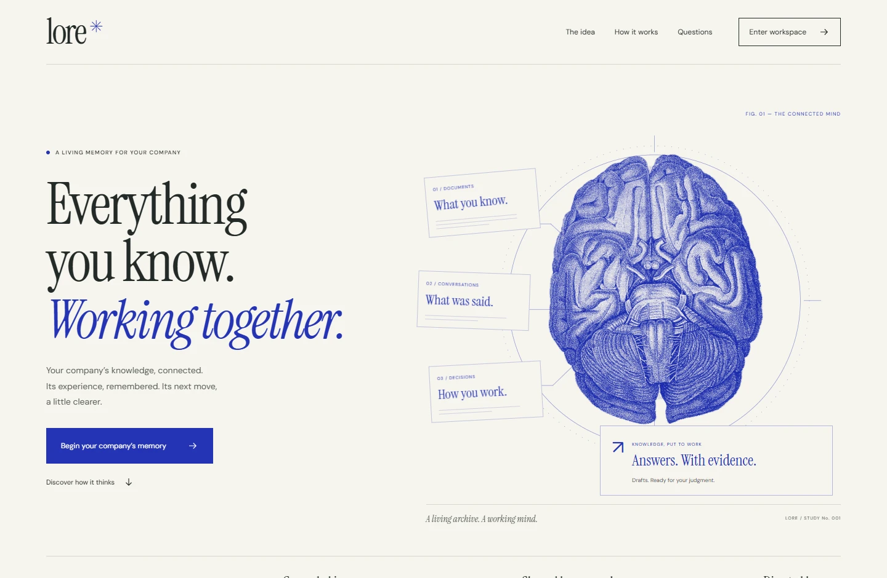

LORE
A workspace that remembers.

Base of the brainThe problem
A proposal might live in a document while the rule for approving it lives in someone’s head. To help draft the next proposal, an assistant needs both. LORE keeps project records, source documents and explicit working rules in a persistent workspace.
The adaptation
LORE builds on the MYND prototype. The adaptation adds the public entrance and editorial identity, and addresses browser navigation and document uploads. The retrieval, memory and task systems come from the upstream application.
From upload to answer
The browser sends a document to an Express API. The server extracts its text and stores it with source metadata in the signed-in account’s SQLite index. When a question arrives, full-text search retrieves relevant passages. The configured model receives those passages alongside project context and memory. The interface streams the answer and lets the reader open its sources.
Where the boundaries matter
Uploading a second file should preserve the first. LORE treats individual uploads as additions and reconciles folder uploads against the selected folder’s snapshot. Account context also follows each asynchronous request so that retrieval stays inside the right workspace.
Working with the evidence
The knowledge map opens indexed material for inspection. Memory lets a user review and correct working rules. Tasks can hold a draft for revision, and supported external actions have approval checks. Generating answers requires a configured model provider.
System flow
- Upload a document
- Extract and index text
- Retrieve passages
- Answer with sources
Inside the application

